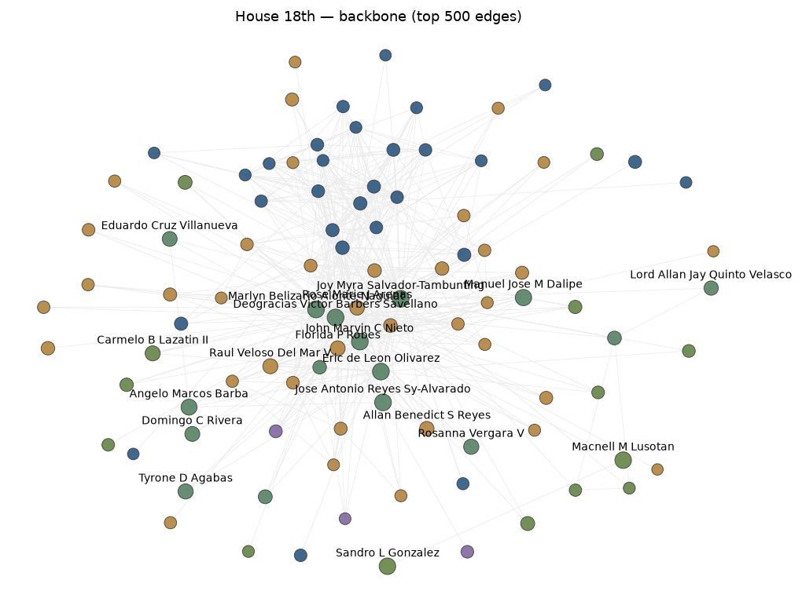

Legislators as nodes, co-authorship as edges. Louvain communities
(seed 42). Node color = community; node size = bills co-authored;
edge width = shared-bill count.
Statistics
Nodes
305
Edges
39,755
Modularity
0.055
Communities (n≥2)
5
Communities (total)
23
Isolated fraction
6%
Interactive backbone
Hover any node for the full attribute tooltip; drag to pan;
scroll to zoom (labels overlap at default zoom — zooming in
separates them).
Static rendering

Same backbone as the interactive view, rendered as a static image for print and no-JS readers. Top 20 nodes by bills_coauthored are labeled — with ~150-200 nodes in the backbone, labeling all would overlap on a static image. The interactive view above labels every node.